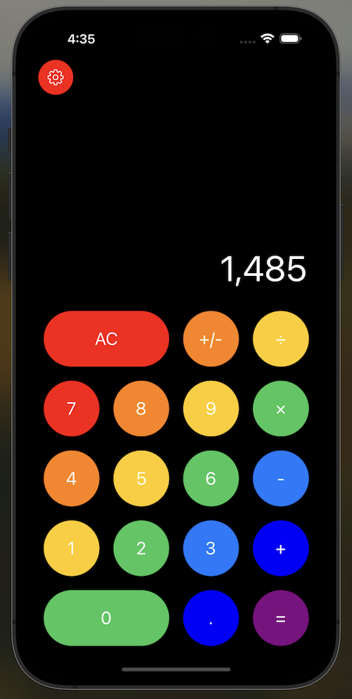

iOS Calculator
Overview
 In 2021, I was using my phone and began to wonder about how iOS apps are made. So, I decided to research the process of developing applications for phones and began creating an app. The app that I created has a lot of the same features as the standard calculator on any iPhone, however it also allows you to customize the color scheme to be more user friendly. Instead of brainstorming app ideas and wasting time thinking of something innovative, I chose to just recreated something that already exists in my phone, so that I can learn the fundamentals of app development. I had to learn how to code using Apple's custom coding language named Swift and XCode IDE. Overall, the final product is simple yet effective.
Tech Stack
- Swift
- XCode